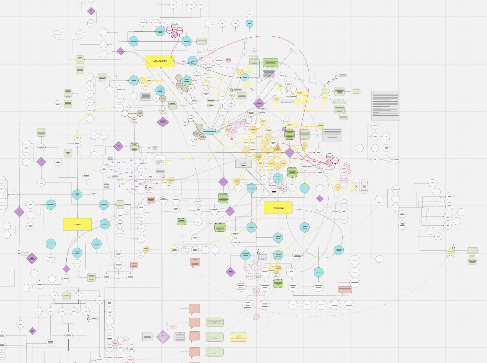
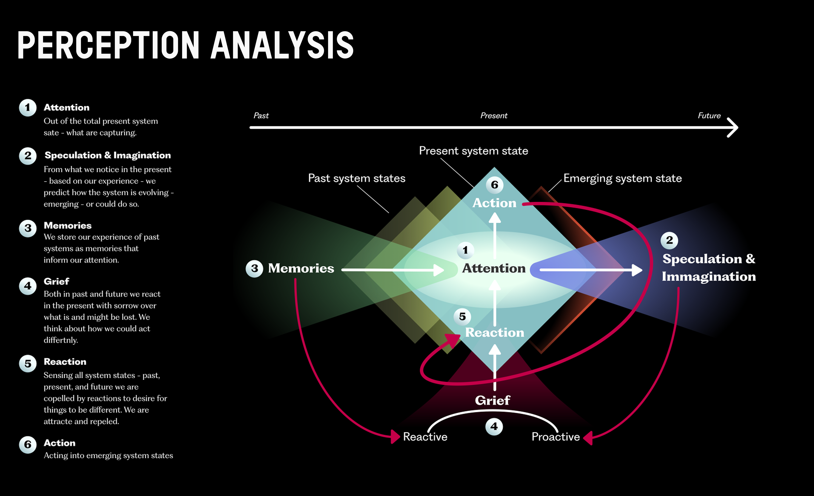
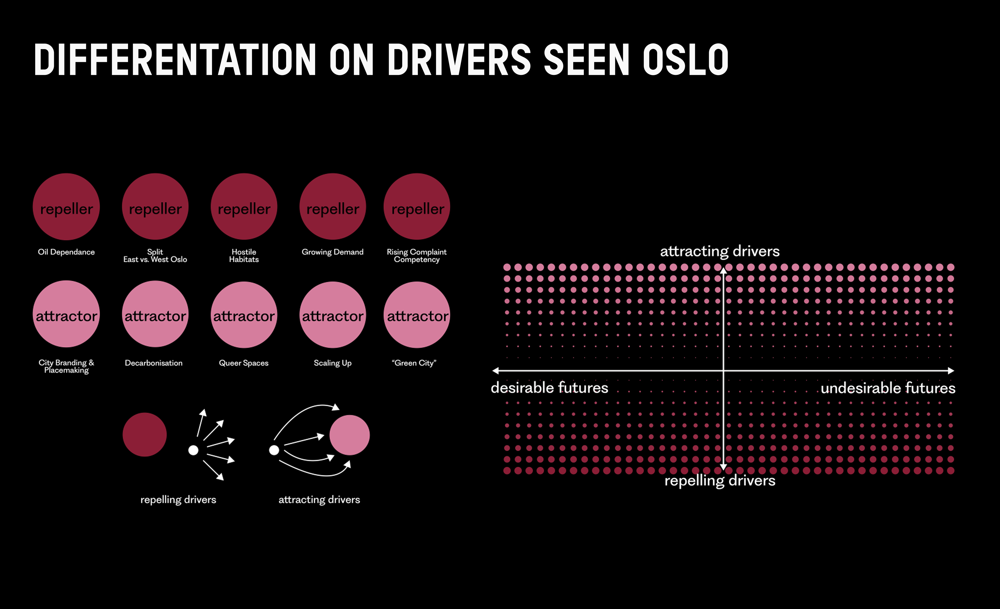
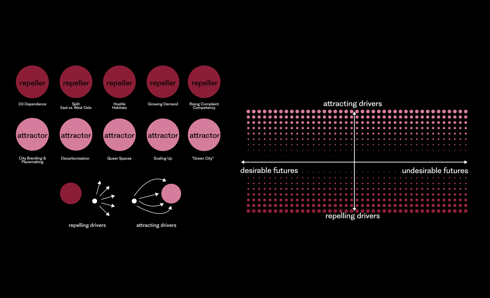
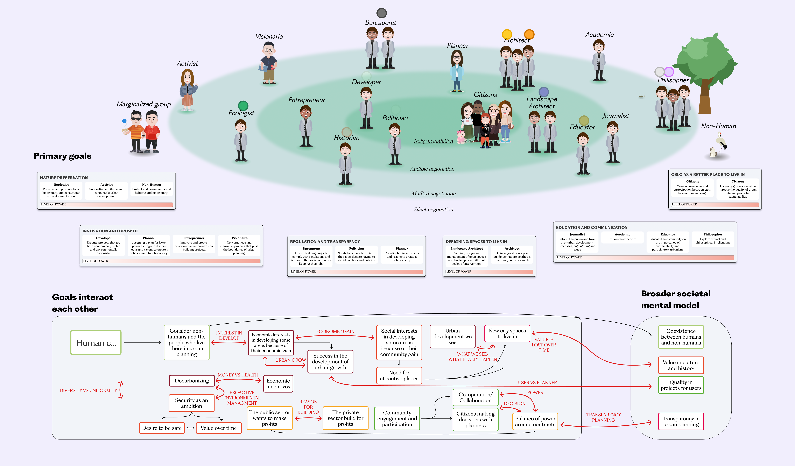
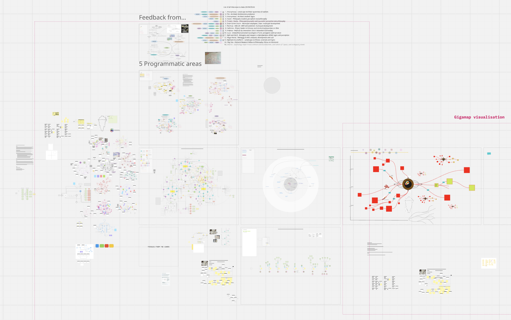
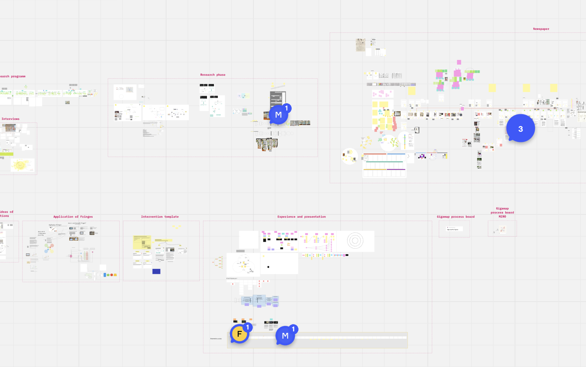

Speculative Systemic Design · AHO · 2024
Projecting &
Reacting: Oslo
Uncovering how our perceptions of Oslo shape its urban development
Developed during the 2024 Systems-Oriented Design semester at AHO, Projecting & Reacting: Oslo investigates the future of urban diversity and the evolution of city habitats.
Using a Rich Design Space methodology and a collaborative Miro environment, the team synthesised complex research into a comprehensive Gigamap that anchored the entire design process.
Central to the inquiry is an Actors Map built from 15 interviews with city inhabitants, identifying four problem areas analysed through a Perception framework — Attention, Speculation, Memories and Reaction — that operationalises the concept of Proactive Grief.

Section 01 · Perception
A six-part framework for perceiving the city.
Attention — out of the total present system state, what are we actually capturing? Speculation & Imagination — from what we notice, we predict how the system is evolving. Memories — past experiences inform present attention.
Grief — in both past and future we react in the present with sorrow over what is and might be lost. Reaction — sensing system states, we are pushed to desire things differently. Action — acting into emerging system states.



Section 02 · Push & Pull
The forces pulling Oslo toward and away from itself.
By mapping Oslo's systemic Push & Pull drivers, the research distinguished attractors — Queer Spaces, Decarbonisation, City Branding & Placemaking, Scaling Up, "Green City" — from repellers like Oil Dependence, the Split between East and West Oslo, Hostile Habitats, Growing Demand and Rising Complaint Competency.
This analysis was refined through a feedback-loop system that transformed blurry future speculations into a Portfolio of Interventions — culminating in the "Phase to Phase" newspaper deliverable and the long-term "Tivoli Oslo" proposal.

Section 03 · Gigamap
A gigamap to navigate urban complexity.
The project employs a Gigamapping methodology centred on a comprehensive Actors Map derived from primary interviews with city inhabitants. By analysing interconnected challenges, four core problem areas were identified as the foundation for speculative future scenarios.
While the future is presented as "blurry" — timeless and imaginary — the feedback-loop system allows for a clearer distinction between attractive and repulsive outcomes. Governed by broader societal mental models and goal drivers, it enables a transition from speculation to conscious action — guiding a Portfolio of Interventions across mid- and long-term horizons.

